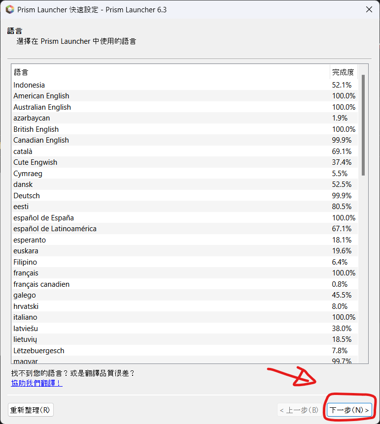
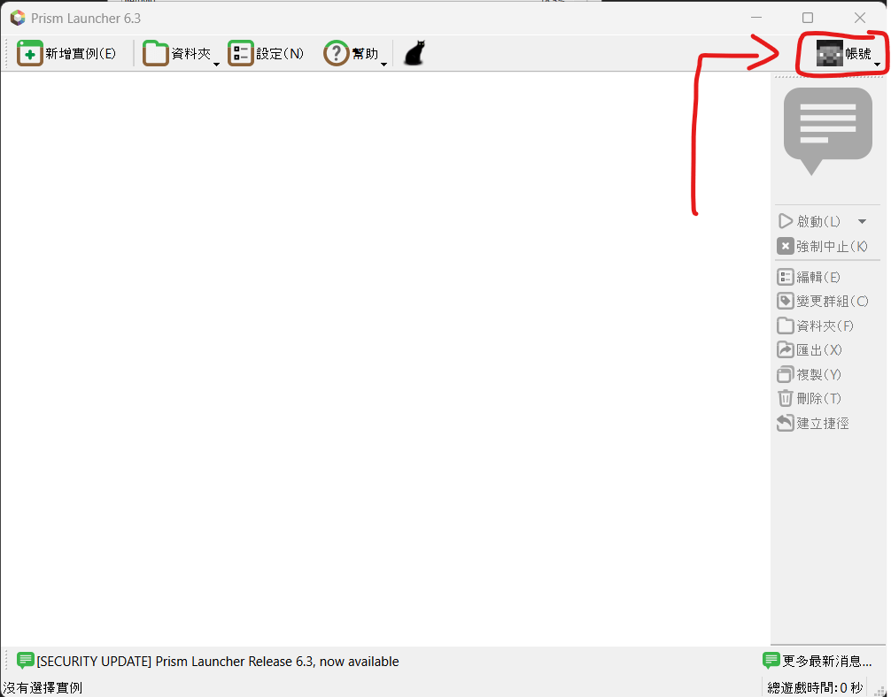
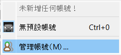
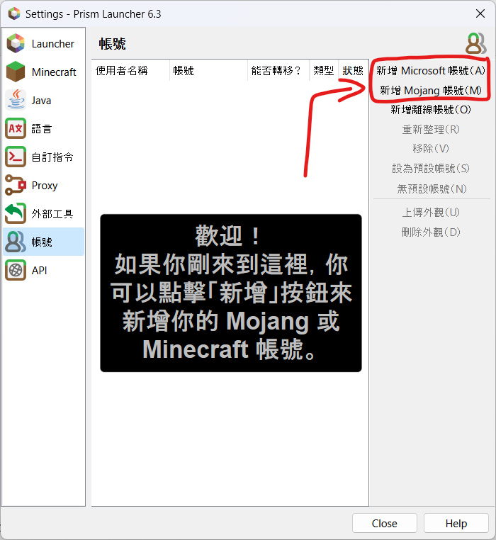
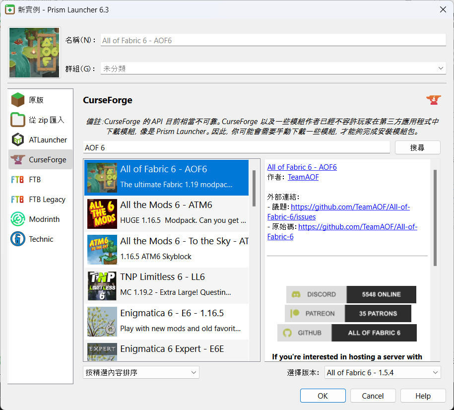
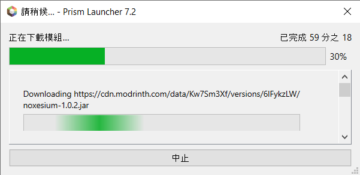
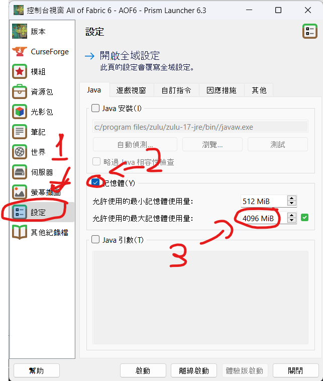

模組包安裝教學
以下是 Prism啟動器 安裝模組包教學
Windows 10/11 64bit
Prism啟動器 前置檔案 : Microsoft Visual C++ Redistributable 2022 x64
*前置檔案 一定要先安裝好
安裝 Prism 啟動器 安裝 Java 17 模組包安裝步驟Prism啟動器 安裝步驟 :
-
下載 Prism 啟動器和Java 17的安裝檔 點擊上面的綠色按鈕
-
安裝完成後 選擇語言
 -
選擇Java版本 如果沒顯示 請確認是否有安裝 JAVA 17 (安裝後 按 重新整理)

-
按右上角的 帳號 來新增 Minecraft 帳號
 -
選擇 管理帳號
 -
新增 Microsoft 帳號 按照上面提示開啟瀏覽器跟貼上代碼

模組包安裝步驟
-
在主畫面 按左上角的 新增實例

-
選Curseforge 在 搜尋框打上 AOF 6
 -
接下來 會自動安裝模組包 （注意 有些模組不能自動下載 它會要你手動去瀏覽器那邊下載 如下圖）
按 開啟下載網頁 等它全部下載完成 後 按 OK
 -
在主畫面右邊 有個 編輯 點下去 選 設定 那邊可以設定記憶體 完成後 可以按 啟動
